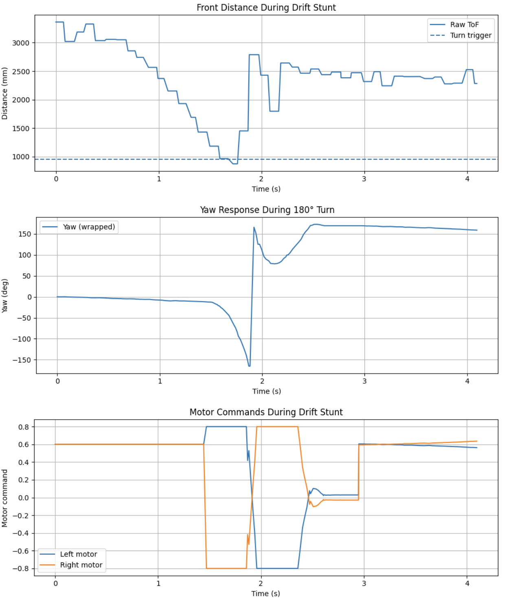

The goal of this lab was to make the robot perform the drift stunt by driving quickly toward a wall, triggering a turn near 3 ft from the wall, completing a 180° turn, and then driving back in the opposite direction. This required integrating distance sensing, yaw control, and a state based sequence into one controller.
I implemented the stunt as a simple state machine with three phases: approach, turn, and return. During the approach phase, the robot drives forward using a constant motor command and monitors the front ToF sensor. Once the measured distance drops below a manually tuned threshold, the controller switches into the turn phase. After the turn settles near 180°, the controller switches into a return phase and drives straight back while holding heading.
For this lab, I used the raw front ToF measurement for the trigger instead of the Kalman Filter.
From testing, the raw ToF reading was stable enough to detect the turn point and provided more direct real time behavior than the KF estimate during the stunt.
A major difference from Lab 6 was the yaw source. Instead of relying on gyro integrated yaw alone, I enabled the DMP on the ICM-20948 and extracted yaw from the quaternion output. I also tracked yaw in unwrapped form, which was necessary because wrapped yaw causes a discontinuity near ±180° and made the robot continue spinning instead of stopping at the turn target.
success &= (g_icm.initializeDMP() == ICM_20948_Stat_Ok);
success &= (g_icm.enableDMPSensor(INV_ICM20948_SENSOR_GAME_ROTATION_VECTOR) == ICM_20948_Stat_Ok);
success &= (g_icm.setDMPODRrate(DMP_ODR_Reg_Quat6, 0) == ICM_20948_Stat_Ok);
success &= (g_icm.enableFIFO() == ICM_20948_Stat_Ok);
success &= (g_icm.enableDMP() == ICM_20948_Stat_Ok);The wrapped and unwrapped yaw values were maintained as follows:
static inline float imu_get_yaw_deg() { return g_imu_state.yaw_g; }
static inline float imu_get_yaw_unwrapped_deg() { return g_imu_state.yaw_g_unwrapped; }
static inline void imu_apply_zero_offset() {
const float rel_unwrapped = g_imu_state.yaw_raw_unwrapped_deg - g_imu_state.yaw_zero_offset_deg;
g_imu_state.yaw_g_unwrapped = rel_unwrapped;
g_imu_state.yaw_g = imu_wrap_deg(rel_unwrapped);
}When the ToF trigger is crossed, the controller stores the current unwrapped yaw and creates a turn target 180° away. The turn error is computed using unwrapped yaw instead of wrapped yaw. This was the key fix that made the stunt work reliably.
g_pid.turn_start_unwrapped_deg = yaw_unwrapped_deg;
g_pid.turn_target_unwrapped_deg = yaw_unwrapped_deg + 180.0f * g_pid.turn_dir;
g_pid.yaw_target_unwrapped_deg = g_pid.turn_target_unwrapped_deg;The turn controller uses a PD command:
error = g_pid.turn_target_unwrapped_deg - yaw_unwrapped_deg;
const float error_dot = (error - g_pid.prev_yaw_error) / dt;
float steer_cmd = (kp_turn * error) + (g_pid.kd * error_dot);
steer_cmd = clamp(steer_cmd, -g_pid.turn_max_u, g_pid.turn_max_u);
left_u = -steer_cmd;
right_u = steer_cmd;The turn phase is only considered complete when both the angle error and angular velocity are small enough:
const bool angle_good = fabs(error) <= g_pid.turn_exit_deg;
const bool rate_good = fabs(gz_dps) <= g_pid.turn_settle_gz_dps;
if (angle_good && rate_good) {
g_pid.turn_locked = true;
g_pid.return_heading_deg = control_wrap_deg(g_pid.turn_target_unwrapped_deg);
}After the robot finishes the 180° turn, it switches into a forward return mode. At first, the robot would sometimes finish the turn and keep rotating instead of translating. This happened because the heading correction after the turn was too strong. I fixed that by clamping the heading correction and forcing both return motor commands to stay positive.
float heading_err = control_wrap_deg(g_pid.return_heading_deg - yaw_deg);
float steer_hold = g_pid.heading_kp * heading_err;
steer_hold = clamp(steer_hold, -0.10f, 0.10f);
left_u = g_pid.return_u - steer_hold;
right_u = g_pid.return_u + steer_hold;
left_u = clamp(left_u, 0.10f, 1.0f);
right_u = clamp(right_u, 0.10f, 1.0f);The distance plot shows the robot approaching the wall and then increasing its distance again after the turn, confirming a successful return. The yaw plot shows the robot reaching the turned around heading near 180°. The motor command plot clearly shows the three phases: forward motion, in place turning with opposite motor signs, and forward return motion.

Below are two additional runs of the stunt.
Had a lot of fun with this lab and excited for the next one.